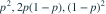
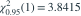
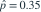
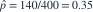

三类独立抽样观测的计数为 20、100、80，理论概率为

，p 未知。用最大似然估计 p 后进行 Pearson 拟合优度检验。已知
，结论是哪项？- A

，统计量约 1.956，自由度2，拒绝模型 - B，统计量约 1.956，自由度1，拒绝模型
- C，统计量约 1.956，自由度1，不拒绝模型
- D，统计量约 1.956，自由度2，不拒绝模型
我已思考，展开答案与解析
正确答案：C
- 对数似然中 p 的幂次数为 ， 的幂次数为 ，所以

。 - 相应期望频数为 、、。
- Pearson 统计量为 。
- 3 个类别减去和约束与 1 个估计参数，自由度是 ；统计量小于临界值，因此不拒绝模型。
易错提醒估计了模型参数后，拟合优度检验自由度还要减去该参数数目。
南审 813 · 2026 · 三·3，PDF第2页
从大题拆分考点并重新编写选项；数值或设问有调整。
查看参考来源